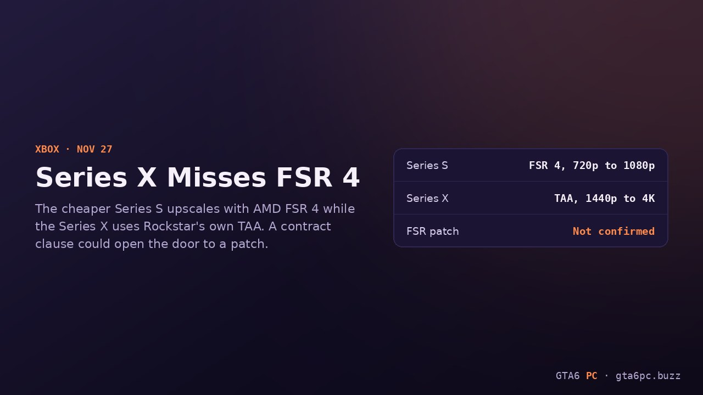

GTA 6 Xbox Series X missing FSR 4: why the Series S has it and what a patch would need
The cheapest Xbox has a graphics feature the most powerful one does not. GTA 6 on Xbox Series S uses AMD's machine-learning FSR 4 upscaling, while the Xbox Series X uses Rockstar's own in-house temporal anti-aliasing instead. Fans have now found a clause in Take-Two's contract with Microsoft that they say could bring FSR 4 to Series X in a future update, but the clause mentions neither GTA 6 nor FSR, and Rockstar has said nothing about a patch.

The upscaling split across consoles
Every version of GTA 6 is upscaled: none of the four consoles draws the game world at the resolution that reaches the television. Rockstar explained the split in a technical statement to Wccftech just before launch, credited to Jonathon Ashcroft, Chris Oat and Marc Chambers on its technology team. The picture it paints is lopsided in a way nobody expected.
On Xbox Series S, the game renders at 720p and AMD FSR Upscaling 4 reconstructs a 1080p image. On Xbox Series X, the game renders at 1440p and Rockstar's own temporal anti-aliasing (TAA) upscales it to 4K. The base PlayStation 5 matches the Series X: 1440p to 4K through the same in-house TAA. Only the PS5 Pro uses a machine-learning upscaler at the high end, Sony's PSSR2, taking 1440p to 4K. On every console, the finished image is then composited with a 4K user interface. The frame rate target is 30 FPS everywhere.
FSR 4 and PSSR2 both use trained neural networks to rebuild fine detail and edges from lower-resolution frames, which generally looks cleaner than standard TAA. That leaves the Series X as the only high-end console in the lineup without a machine-learning upscaler, even though it is the more powerful Xbox by a wide margin. Our DLSS and FSR on PC guide explains how these upscalers work and what they will mean when the PC version arrives.
Why Series S got FSR 4 and Series X did not
The timing explains part of it. AMD made FSR 4 available to Xbox developers on November 4, 2026, around two weeks before GTA 6 launched on November 19, through the October 2026 Xbox Game Development Kit. VideoCardz reported that AMD introduced FSR Upscaling 4.1.2 for Xbox developers that month, and noted that Rockstar has not specified exactly which FSR model the Series S build uses.
Fans suggest Rockstar simply ran out of time to add FSR to the Series X build before launch. That is a fan reading, not a confirmed explanation, and it is worth keeping separate from the facts. What is confirmed is that the Series S needed the help more: at 720p it renders a quarter of the pixels the Series X renders, so a smarter upscaler matters more there. Rockstar also rebalanced the ray-traced global illumination per platform because of memory pressure on the Series S, according to the same Wccftech statement.
There is also a real chance the difference barely matters in practice. Digital Foundry's 100-hour cross-console testing ranked the Series X second overall, ahead of the base PS5 and the Series S, with the PS5 Pro first. The Series X mostly holds 30 FPS with occasional dips into the high 20s, and it keeps stronger visual settings than the Series S. FSR 4 is a better upscaler than TAA, but it cannot add pixels the game never rendered, and it cannot fix a frame rate dip.
The feature-parity clause
The new twist in the story arrived on November 27, 2026, when TweakTown reported that fans had found a clause in Take-Two's contract with Microsoft. The clause was spotted by fan account XBOX News for Koreans on X, pointing to the Xbox publishing agreement Take-Two filed with the US Securities and Exchange Commission.
In simple terms, the section says that if a game gets a hardware feature update after launch on a rival console, Take-Two and Microsoft "will work together in good faith" to try to bring a matching feature to the Xbox version. The contract gives HDR and spatial audio as examples, and it notes that this depends on what the Xbox hardware can handle and whether the right development tools are available. Parts of the clause are blacked out, including exactly which rival platforms it covers.
That is a long way from a promise. The clause does not mention GTA 6 or FSR by name, it only commits the companies to try, and Rockstar has said nothing about FSR coming to Series X. WindowsForum, which covered the story the same day, put it plainly: a patch is not guaranteed. The clause is best read as a door left open, not a roadmap.
Would FSR 4 actually help Series X?
If a patch did arrive, the gain would be image quality, not frame rate. FSR 4 rebuilds a sharper picture from the same 1440p render; it does not make the simulation run faster, and GTA 6 on consoles is CPU-limited, as Rockstar confirmed when it ruled out a 60 FPS mode on PS5 Pro. Our PS5 Pro 60 FPS explainer has the full story there.
The more interesting question is what this split says about the PC version. When GTA 6 eventually reaches PC, upscaling will be a menu option, not a platform lottery: DLSS, FSR and XeSS on hardware far faster than any console. The console upscaling debate is a preview of that choice, and a reminder that the PC version is where the graphics settings will finally be in the player's hands. Our PC versus console comparison sets out the full gap between the platforms today.
Quick answers
Does GTA 6 on Xbox Series X use FSR 4?
No. GTA 6 on Xbox Series X uses Rockstar's in-house temporal anti-aliasing (TAA) to upscale a 1440p image to 4K. Only the Xbox Series S version uses AMD FSR Upscaling 4, taking a 720p image to 1080p.
Why does the Series S have FSR 4 but the Series X does not?
AMD only made FSR 4 available to Xbox developers on November 4, 2026, about two weeks before GTA 6 launched on November 19. Fans suggest Rockstar ran out of time to add it to the Series X build, which is a guess, not a confirmed explanation. The Series S needed the help more, since it renders at only 720p.
What is the feature-parity clause fans found?
It is a section of the Xbox publishing agreement Take-Two filed with the US Securities and Exchange Commission. It says that if a game gets a hardware feature update after launch on a rival console, Take-Two and Microsoft will work together in good faith to try to bring a matching feature to the Xbox version. It gives HDR and spatial audio as examples, and parts of it are redacted.
Will GTA 6 get FSR 4 on Xbox Series X?
Unknown. Rockstar has said nothing about an FSR update for Series X. The clause does not mention GTA 6 or FSR by name, and it only commits the companies to try, not to deliver. Treat a future patch as possible, not promised.
Is the Series S version of GTA 6 better than Series X?
No. The Series S has the newer upscaler, but it starts from four times fewer pixels, targets 1080p instead of 4K, uses weaker visual settings, and drops into the mid-20s more often. Digital Foundry ranked the Series X second overall across the four consoles, ahead of the base PS5 and the Series S.
Last updated . We update this page when Rockstar announces anything new.
Sources
- TweakTown: Xbox Series X is missing a GTA 6 upgrade that the cheaper Series S already has
- WindowsForum: GTA 6 FSR 4 on Xbox Series X: Why Series S Has It and a Patch Isn't Guaranteed
- GameRant: GTA 6 Gives the Xbox Series S One Feature the Series X Doesn't Get, but There's a Catch
- MakeTechEasier: Why GTA 6 renders at 720p on the Xbox Series S and still shows a 1080p picture